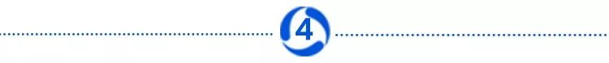

疫情神药，何时见效？
原文链接 备份链接 作者：任尚坤 来源：*商业人物*（ID：*biz-leaders）* 谣言又来了，辟谣也来了。这次是关于一款“神药”。 希望 “瑞德西韦生效，17-40小时病人好转90%以上。” 这是美国吉利德公司的在研药物，英文原 …
来源：腾讯新闻《潜望》 作者 章北海 何西
寄托人们战胜病毒朴素愿望的“神药”瑞德西韦，被科创板上市的博瑞医药（688166.SH）成功仿制，并开始启动批量化生产。2月12日，这一消息直接助推博瑞医药开盘即封死涨停，涨幅20.01%，总市值214亿元。
不过，与资本市场表现出的亢奋相比，一位美国医学教授对腾讯新闻《潜望》指出，自从美国宣布使用该药物治愈一名患者，以及国内开始实施临床三期试验后，瑞德西韦被寄予厚望。但在临床试验结束之前，不能证明瑞德西韦就是特效药。
最新的临床试验注册信息显示，瑞德西韦针对新型冠状病毒肺炎重症患者的三期临床试验，由中日友好医院曹彬教授带队的，已经在2月10日入组。重症患者病例人数452人，根据临床试验设计，试验采用随机、双盲、安慰剂对照方法展开。此前消息显示，临床三期试验预期在4月27日结束。
在试验结果最终证明瑞德西韦切实有效后，尽管博瑞医药在公告中表示疫情期间将主要通过捐赠等方式供应给相关病人，博瑞医药仍需迈过专利授权门槛。美国制药公司Gilead作为该药物的专利人，需要对博瑞医药的仿制药进行授权后方可销售。
这也意味着，从仿制成功到最终带来效益，博瑞医药面临的关卡重重。博瑞医药2月12日的成交数据显示，二级市场疯抢筹码，一些机构则趁机抛售。而同属瑞德西韦概念股的博腾股份和永太科技，已在多日涨停后连续跌停，走出过山车行情。

“神药”瑞德西韦
用于美国首例新冠病毒患者的治疗的瑞德西韦，是由美国生物制药公司Gilead 几年前针对非洲流行的埃博拉病毒所研制的抗病毒药剂。但从临床试验效果来看，实际上瑞德西韦对埃博拉病毒患者的治疗效果并不好，与其他三款针对埃博拉病毒研制的药剂同时进行临床试验时，接受瑞德西韦治疗的埃博拉病毒感染患者的致死率最高。
在2019年10月由美国国家过敏与传染病研究机构公布的一篇论文中称，总共1400多名接受临床试验的患者被随机分配四种药的治疗，分别是ZMapp、Mab114、REGN-EB3和瑞德西韦，最终，接受ZMapp治疗的患者死亡率为49%，接受mAb114治疗的患者死亡率 为34%，接受REGN-EB3治疗的患者死亡率为29%，而接受瑞德西韦治疗的患者死亡率最高，达到53%，埃博拉病毒爆发的总体死亡率为67%。
基于这样的临床试验结果，试验数据和安全监测委员会决定，继续进行死亡率最低的两款药REGN-EB3和mAB114的试验，而解除了另两款药ZMapp和瑞德西韦的继续试验。
但在新型冠状病毒肆虐之下，一起基于“同情用药”准则下的治愈案例，让沉寂的瑞德西韦成为扼住疫情咽喉的新希望。很快，中日友好医院宣布其在武汉疫区牵头开展该药物治疗新型冠状病毒的临床研究。
2月11日，博瑞医药发布公告称，公司已于近日成功仿制开发了瑞德西韦原料药合成工艺技术和制剂技术，并已批量生产出瑞德西韦原料药，瑞德西韦制剂批量化生产正在进行中。公司还表示，如果该产品能获批上市，疫情期间将主要通过捐赠等方式供应给相关病人。
博瑞医药还披露，截至目前，其在瑞德西韦的原料药和制剂开发和生产中已发生的成本预计 约为 500 万元，后续进一步放大生产，预计还需要投入约 1000 万元。

面临试验结果与授权两大关
从仿制成功到最终带来效益，博瑞医药面临的关卡重重。
关卡之一即为瑞德西韦正在进行的临床三期试验。对于临床试验这一过程，浙江大学教授王立铭表示，“瑞德西韦需要严格遵循新药开发的规律，不能随意缩短研究的时间和标准。因为“不管疾病有多严重，不管我们期待新药和新疫苗的愿望是多么迫切，新药和新疫苗开发的规律无法被逾越。”
博瑞医药在公告中也对投资者进行了相应的风险提示：
1、瑞德西韦由美国 Gilead 公司开发，用于防治埃博拉病毒感染，已经在国外通过了Ⅰ期和Ⅱ期临床试验，目前瑞德西韦用于新型冠状病毒（2019-nCoV）感染的Ⅲ期临床试验并未结束，因此该药物对于新型冠状病毒（2019-nCoV）感染是否有效存在重大不确定性。如果相关临床试验结果不理想，则瑞德西韦的仿制技术就无重大价值可言。
2、如果新型冠状病毒（2019-nCoV）感染造成的疫情短期内迅速获得控制和缓解，确诊病人持续减少，即使瑞德西韦获得注册批准，用于治疗新型冠状病毒（2019-nCoV）感染，预计也不会对抗击本次疫情有重大帮助。
3、即使瑞德西韦用于新型冠状病毒（2019-nCoV）感染的临床试验成功，公司的前述研发要最终转化为产品投入市场，仍需经过获得专利权人美国Gilead公司授权、药物临床、药品审批等多个环节，这一过程将存在重大不确定性。
4、公司将对瑞德西韦的仿制研发视为自身所承担的社会责任，若该产品能够获批上市，疫情期间主要通过捐赠等方式供应给相关病人。因此，从生产成本、定价、销量预期等方面考虑，预计该产品不会对公司2020年的经营业绩产生重大影响。

二级市场疯抢筹码 机构趁机抛售
尽管进行了风险提示，但仿制成功的消息已经让二级市场开始疯抢筹码。
截止2月12日收盘，科创板上市的博瑞医药股价突破50元达52.12元/股，较上市发行价12.71元，实现了超3倍的涨幅。
由于公司在11日公告称仿制开发了瑞德西韦原料药合成工艺技术和制剂技术，12日一开盘，股价就被巨量资金死死封在20%的涨停板上。
从成交回报可以看出，买入资金占据了主导权。

有意思的是，前五买入的资金较为平均，都在510万到522万之间。
“这意味着没有哪一家在筹码上吃独食，买入力量较为均衡。”一位浙江的游资操盘手认为，这就表示日后的抛盘不会太剧烈。
卖出席位中，卖一席位为西藏东方财富成都东大街营业部，卖出469万元，但该营业部并未出现在2月3日的买入席位中，这就意味着它手握的筹码是在多个交易日里逐步买入而来。
卖二席位中，出现了机构专用席位，卖出320万元。“很有可能是公募或私募的某个产品开始止盈。”他解释道。
总体而言，前五的买入资金超过前五卖出总计1077万元。
“买入超过卖出太多，不一定利于股价的后续走势。”因为买入的席位就已是潜在的空头。
买入得多，卖出得就必然多。“龙虎榜上的资金，都要在短期内止盈或者止损。”
一位投资人更是苦口婆心道，对于仿制成功的消息需要理性看待，好好读读公告再兴奋。首先瑞德西韦第三期临床试验还差不多要一个月才能出结果，再者就算是做出仿制药也需要美国吉利德公司授权才能生产卖，最后等临床完了有没有效果两说，新冠肺炎已经不治而愈，没有特效药用于治疗新冠肺炎，最好的药是“免疫力”，所以不要兴奋了。只能说明公司能力强，这么短时间出仿制药，就算一个月以后临床试验成功，博瑞也是通过捐赠的方式给病人，并不会对业绩有实质性帮助。

实控人曾花三千万养锦鲤
博瑞医药于2019年11月8日登陆科创板。在上市前夕，其实控人袁建栋的特殊爱好，曾引来上交所关注。
中介机构对博瑞医药实际控制人袁建栋银行流水进行核查时，发现袁建栋在个人兴趣爱好方面支出巨大。
根据披露，2016年1月1日至2019年9月24日期间，博瑞医药实际控制人袁建栋在其个人爱好观赏鱼方面，共计支出3228.50万元，用于支付锦鲤鱼的购买和养殖的相关费用。
保荐机构民生证券现场查看了袁建栋的锦鲤鱼，其购买和培育的锦鲤鱼主要养殖在位于苏州旺山的养殖场所内。
公告还透露，袁建栋在国际国内多项锦鲤鱼评比中曾多次获奖，其中主要奖项包括第十八届中国锦鲤大赛全场总合冠军、全日本总和锦鲤品评会优胜等，所获奖项涉及多个部类和多个品种，并曾获得日本首相安倍晋三签发的奖状。
原文链接 备份链接 作者：任尚坤 来源：*商业人物*（ID：*biz-leaders）* 谣言又来了，辟谣也来了。这次是关于一款“神药”。 希望 “瑞德西韦生效，17-40小时病人好转90%以上。” 这是美国吉利德公司的在研药物，英文原 …
原文链接 备份链接 瑞德西韦已在我国进入临床测试阶段，《潜望》从接近该临床试验人员处获悉，瑞德西韦试验的第一例患者从重症到恢复，用时不到24小时，“效果很好”。 《潜望》 作者 纪振宇 刘鹏 一起基于“同情用药”准则下的治愈案例，让美国制 …
原文链接 备份链接 美国一个新冠肺炎患者使用瑞德西韦治愈的消息发布后，流传出很多该药有“奇效”的消息，但都仅仅是“美好的愿望”。 新冠肺炎确诊、疑似、死亡人数都在不断上升，人们太需要看到希望了。 瑞德西韦的前一代药物，对治疗猫冠状病 …
原文链接 备份链接 文·图 |《财经》记者 李斯洋 编辑 | 马克 2月6日，首批新型冠状病毒肺炎的重症患者于武汉金银潭医院正式接受新药瑞德西韦（Remdesivir）的临床测试。 2月5日下午，中国工程院院士、中日友好医院原院长王辰，中 …
原文链接 备份链接 1月31日《新英格兰医学杂志》（NEJM）在线发表的一篇论文显示，吉利德（Gilead）公司研发的抗病毒药瑞德西韦（remdesivir）治愈了美国首例新型冠状病毒肺炎确诊病例。在这关键时刻，这个好消息引起了广大民众尤 …